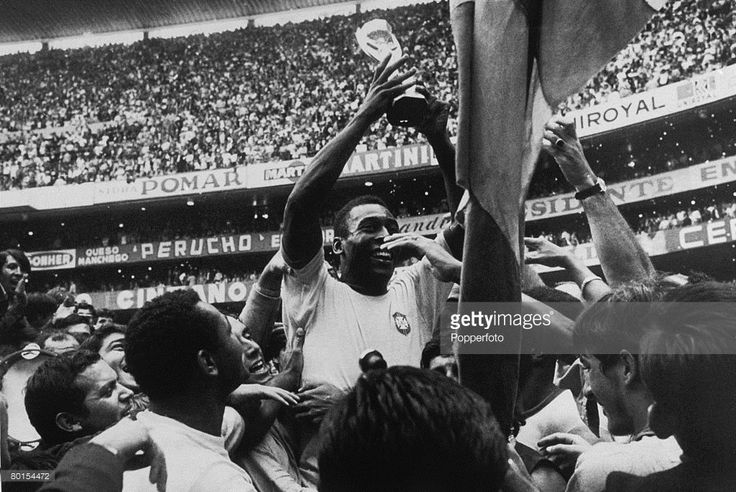
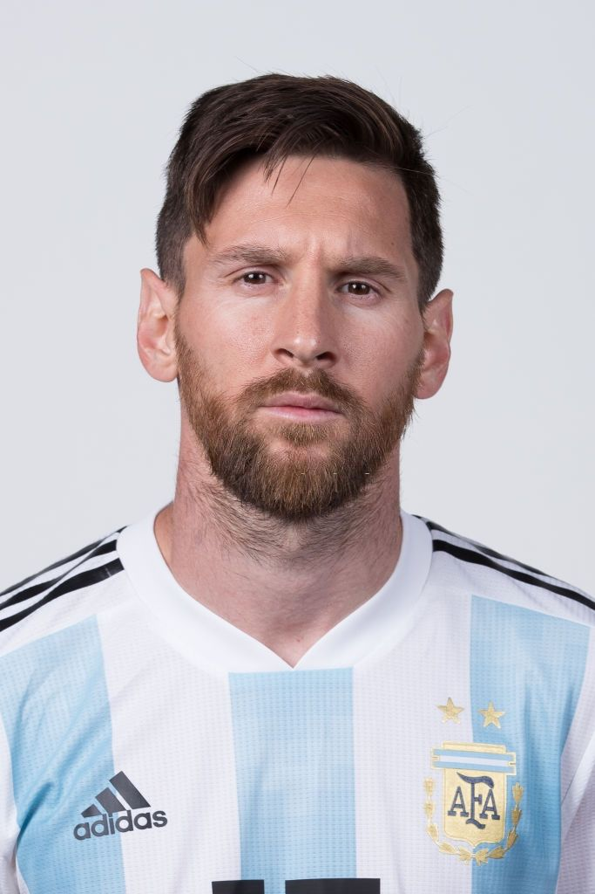

About The World Cup
The FIFA World Cup™ is the pinnacle of international football. Held every four years, it unites the finest national squads across continents to battle for the most coveted trophy in sports.
Since Uruguay hosted the inaugural tournament in 1930, the World Cup has grown into a global cultural spectacle. Every edition delivers timeless drama—from breathtaking bicycle kicks and nerve-wracking penalty shootouts to heroic underdog triumphs that defy the odds.
Beyond the pitch, it serves as a beacon of unity, bringing billions of fans together across languages, borders, and generations under a single universal passion.

Tournament Quick Facts
Inaugurated
1930
Hosted & won by UruguayFrequency
Every 4 Years
Except 1942 & 19462026 Expansion
48 Nations
Historic 3-host nation formatMost Decorated
Brazil (5)
1958, 1962, 1970, 1994, 20022026 WC Host Countries
USA, Canada and Mexico — the first 48-team World Cup.
| Host Nation | Stadium Name | Host City | Matches Hosted |
|---|---|---|---|
| 🇨🇦 Canada | Toronto Stadium (BMO Field) | Toronto | 6 |
| BC Place | Vancouver | 7 | |
| 🇲🇽 Mexico | Estadio Azteca | Mexico City | 5 (Opening) |
| Estadio Guadalajara | Guadalajara | 4 | |
| Estadio Monterrey | Monterrey | 4 | |
| 🇺🇸 United States | Atlanta Stadium (Mercedes-Benz) | Atlanta | 8 (Semi-Final) |
| Boston Stadium (Gillette) | Boston | 7 | |
| Dallas Stadium (AT&T) | Dallas | 9 (Semi-Final) | |
| Houston Stadium (NRG) | Houston | 7 | |
| Kansas City Stadium (Arrowhead) | Kansas City | 6 | |
| Los Angeles Stadium (SoFi) | Los Angeles | 8 | |
| Miami Stadium (Hard Rock) | Miami | 7 (Bronze Final) | |
| New York New Jersey Stadium (MetLife) | East Rutherford | 8 (THE FINAL 🏆) | |
| Philadelphia Stadium (Lincoln Financial) | Philadelphia | 6 | |
| San Francisco Bay Area Stadium (Levi's) | Santa Clara | 6 | |
| Seattle Stadium (Lumen Field) | Seattle | 6 |
| Match Allocation Breakdown | |
|---|---|
| 🇨🇦 Canada Matches | 13 |
| 🇲🇽 Mexico Matches | 13 |
| 🇺🇸 United States Matches | 78 |
| Total Tournament Matches | 104 |
Unexpected Events
Unexpected & Funny World Cup Moments
The FIFA World Cup has produced countless unforgettable moments, many of which had fans laughing or left the football world in complete disbelief. One of the most famous surprises came in 1950 when Uruguay defeated heavily favored Brazil in the final, a result so shocking it became known as the "Maracanazo."
Football has also seen its share of funny incidents. In the 1990 World Cup, England midfielder Paul Gascoigne cried after receiving a yellow card because he thought it would keep him out of the final if England qualified. Although England never reached the final, his emotional reaction became one of football's most memorable images.
Another unforgettable moment came in 1994 when Colombian defender Andrés Escobar accidentally scored an own goal against the United States. While heartbreaking rather than funny, it remains one of the tournament's most unexpected moments.
In 2002, tournament favorites France were eliminated in the group stage without scoring a single goal, stunning football fans around the world. More recently, the 2022 World Cup delivered one of the biggest upsets in history when Saudi Arabia defeated eventual champions Argentina 2–1 in the opening group stage.
These unexpected victories, emotional reactions, and unusual moments remind fans that the FIFA World Cup is more than just a competition—it is a stage where anything can happen, creating stories that are remembered for generations.
Titles
Every champion, and the records that still stand.

1958, 1962, 1970 - Pelé (Brazil)
Pelé remains the only player in history to win three FIFA World Cups. He burst onto the world stage as a 17-year-old in 1958, scoring twice in the final. His combination of skill, vision, and goal-scoring ability makes him arguably the most iconic player in the tournament's history.
1986 - Diego Maradona (Argentina)
Maradona delivered what is widely considered the greatest individual performance in World Cup history during the 1986 tournament in Mexico. He captained Argentina to glory, highlighted by his infamous "Hand of God" and breathtaking "Goal of the Century" against England.


2022 - Lionel Messi (Argentina)
Lionel Messi completed football's ultimate fairytale by captaining Argentina to glory at the 2022 World Cup in Qatar. After years of near-misses, he scored seven goals, including two in what is widely considered the greatest final ever played against France. Lifting the one trophy that had escaped him for his entire career, Messi cemented his legacy as one of the greatest players the game has ever seen.
2006–2022 - Cristiano Ronaldo (Portugal)
Cristiano Ronaldo never lifted the World Cup trophy, but his tournament story is one of unmatched consistency. Across five editions from 2006 to 2022, he became the only player in history to score at five different World Cups — a record that may never be broken. His relentless drive, leadership, and extraordinary longevity made him one of the most iconic figures the tournament has ever seen.